6-місячний акселератор для оборонних стартапів і стартапів подвійного призначення рівня TRL 6+, які вже довели свою ефективність в операційних або бойових умовах і готові вийти на ринки США, Європи та Індо-Тихоокеанського регіону.
Проводиться разом із SRI International у Кремнієвій долині — це відкриває доступ до надійної екосистеми, що охоплює дослідження на рівні DARPA, шляхи у стилі DIU, партнерів НАТО, підрядників і мережі союзних міністерств оборони.
Попередня реєстрація на Когорту №3Дивіться найкращі моменти першої когорти та слухайте команди, які пройшли програму, з перших уст.
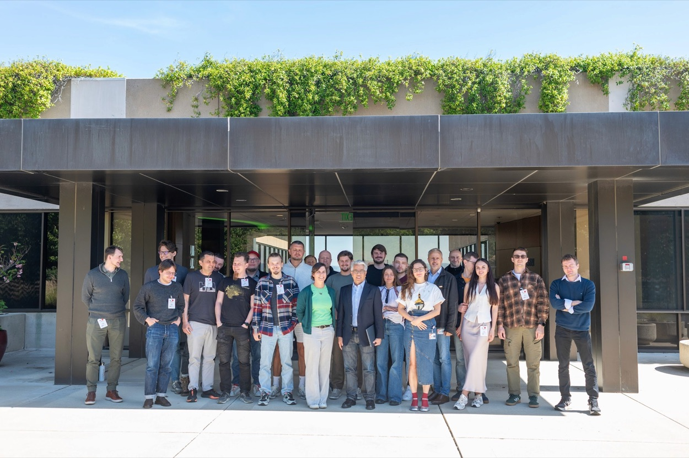
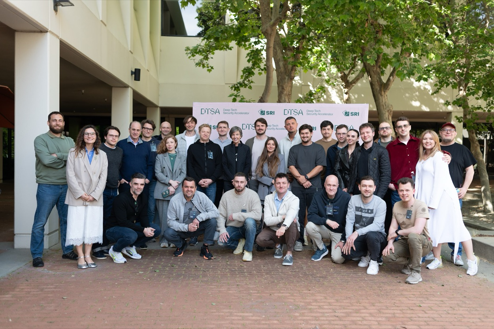
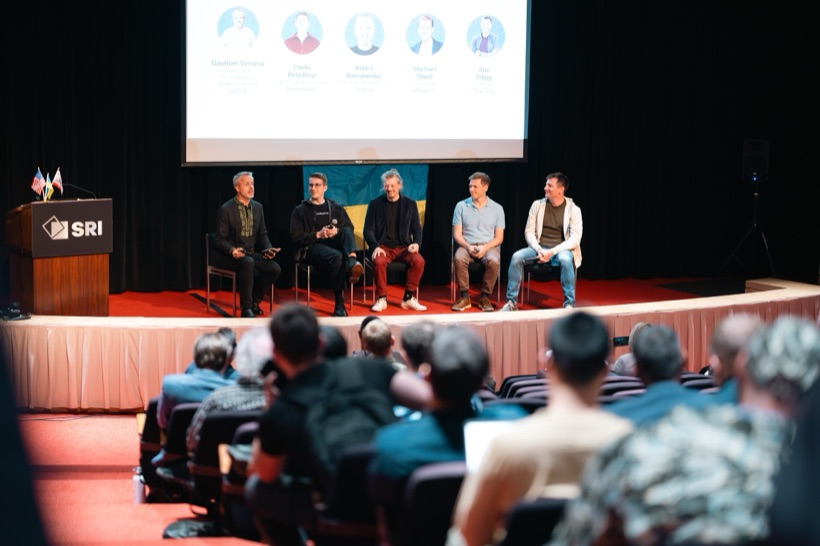
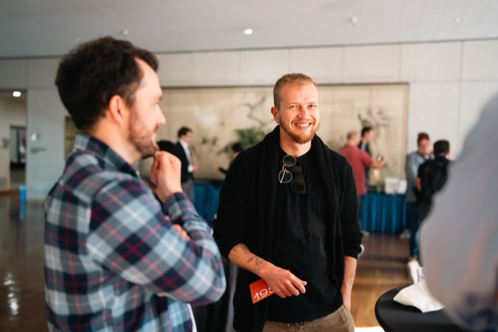
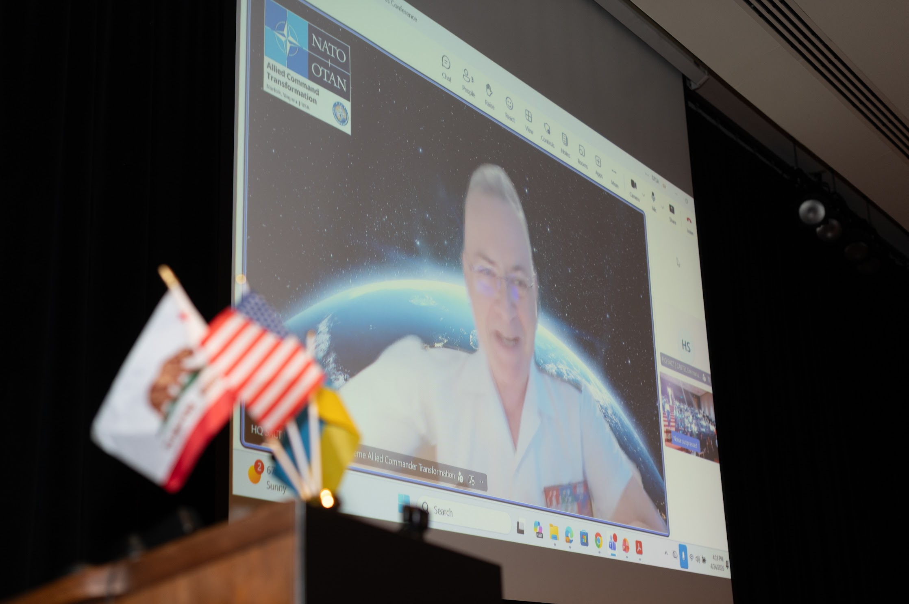
Дізнайтеся, як засновники зміцнили свою презентацію, партнерства та залучення інвестицій завдяки DTSA
Наші випускники →Що означає «Beast Mode» у DTSA
Якщо ваш стартап відповідає цим критеріям і має рівень TRL 6+ з операційним підтвердженням, ви готові увійти в Beast Mode з DTSA.
Ми шукаємо команди з амбітними рішеннями для критично важливих задач у сферах:
Виняткові команди можуть бути розглянуті окремо — якщо ваш стартап будує майбутнє оборонних та подвійних технологій, ви за адресою.
Позиціонування, зустрічі з партнерами та доступ до екосистеми високого рівня довіри, спільно з SRI International.
Вдосконалення стратегії, наративу, GTM, переговорів, експортного контролю та лідерства — з урахуванням реалій оборонного сектору та подвійного призначення.
Структурований доступ до підрядників, оборонних інвесторів, партнерів-союзників, операторів, менторів і R&D-партнерів.
Наша комплексна програма світового рівня розроблена для вирішення унікальних викликів, з якими стикаються стартапи в галузі deep tech безпеки.
Ознайомлення зі структурою програми, узгодження цілей та підготовка до резиденції й етапу виконання.
Очне занурення в роботу: позиціонування, куровані зустрічі, майстер-класи та доступ до екосистеми для прискорення виходу на ринок.
Постійна підтримка з боку експертів-менторів, супровід у комунікації з партнерами й інвесторами та відстеження ключових етапів для ефективного масштабування.
DTSA розроблена для засновників і топменеджерів, які можуть приймати стратегічні рішення та повноцінно залучатися до програми. Ідеальний представник:
Учасник має бути здатним представляти технологію та її операційне підтвердження, спілкуватися з інвесторами й підрядниками та ухвалювати стратегічні рішення під час і після програми. Якщо учасник не може приймати рішення, програма не принесе повної цінності.
Повністю покривається Українським фондом випускників та партнерами-донорами. Учасники самостійно оплачують лише проїзд і проживання.
$8 250 загалом за 2-тижневу резиденцію та 6 місяців менторства й доступу до екосистеми. Учасники самостійно оплачують проїзд і проживання.
Лише операційно підтверджені стартапи, без шуму ідей на ранній стадії, з навчанням, що ґрунтується на досвіді фронту, та прямим доступом до українських засновників та інженерів, які працюють в найскладніших умовах світу.
Куровані зв’язки з підрядниками, інвесторами, партнерами-союзниками та R&D-партнерами в поєднанні з інтегрованим технічним, комерційним і регуляторним супроводом.
Шість місяців підтримки, орієнтованої на виконання, поза межами одноразових заходів — для впровадження, партнерств і виходу на нові ринки.
Ми прискорюємо компанії, які вже будують, а не ті, що лише уявляють.
Наша команда має глибоку експертизу в технологіях, обороні та побудові венчурних проєктів, підтримуючи засновників знаннями та досвідом для швидкого й правильного розвитку.
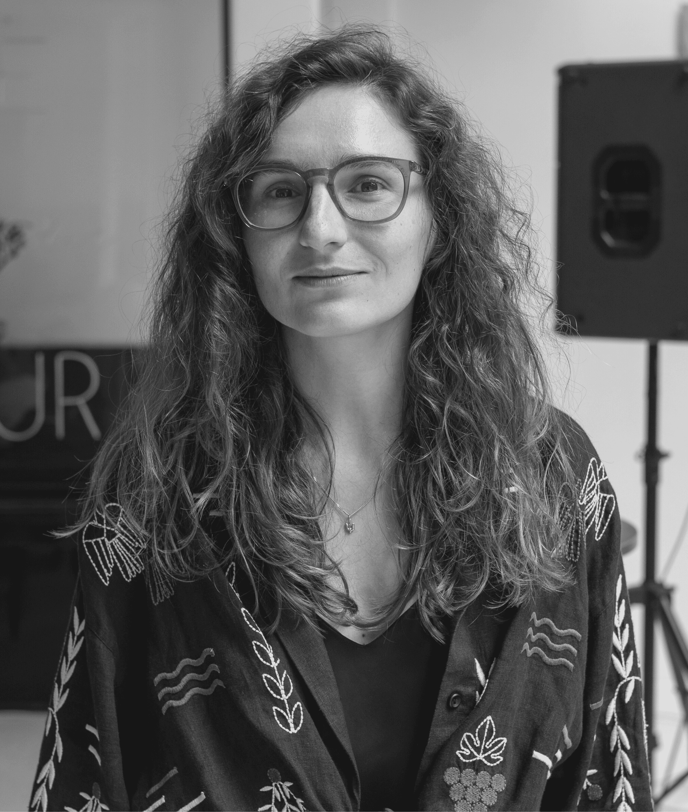
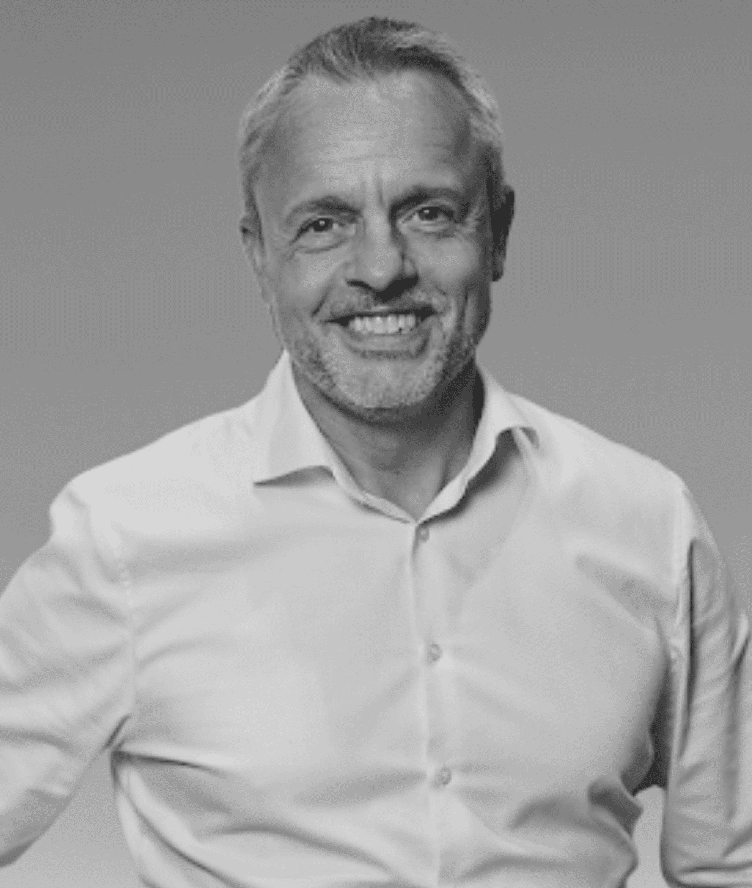
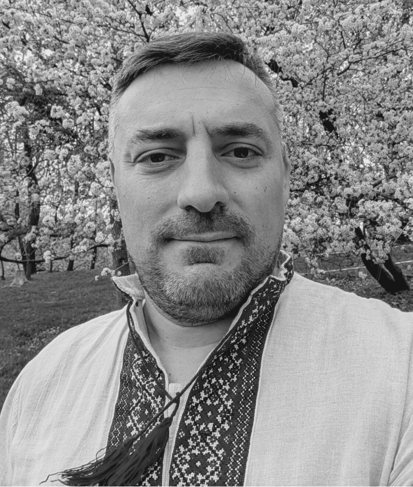
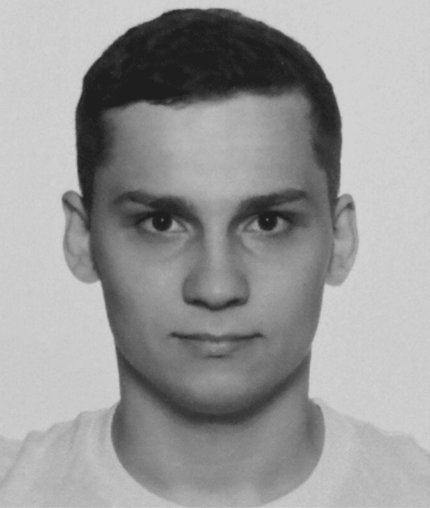
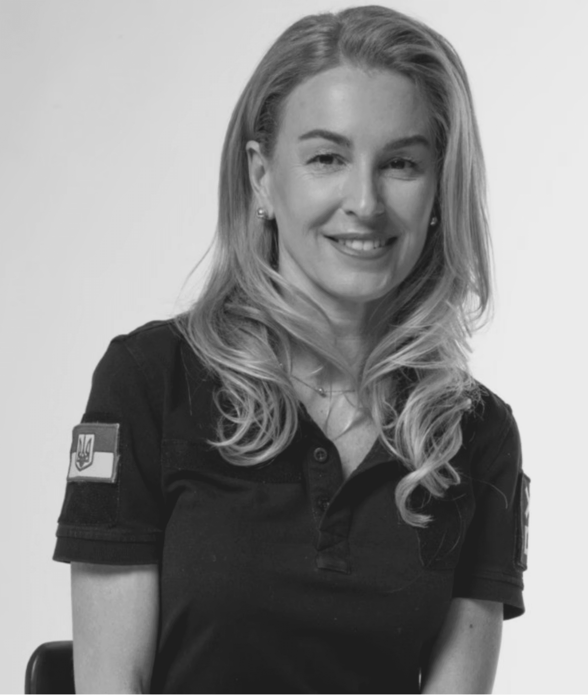
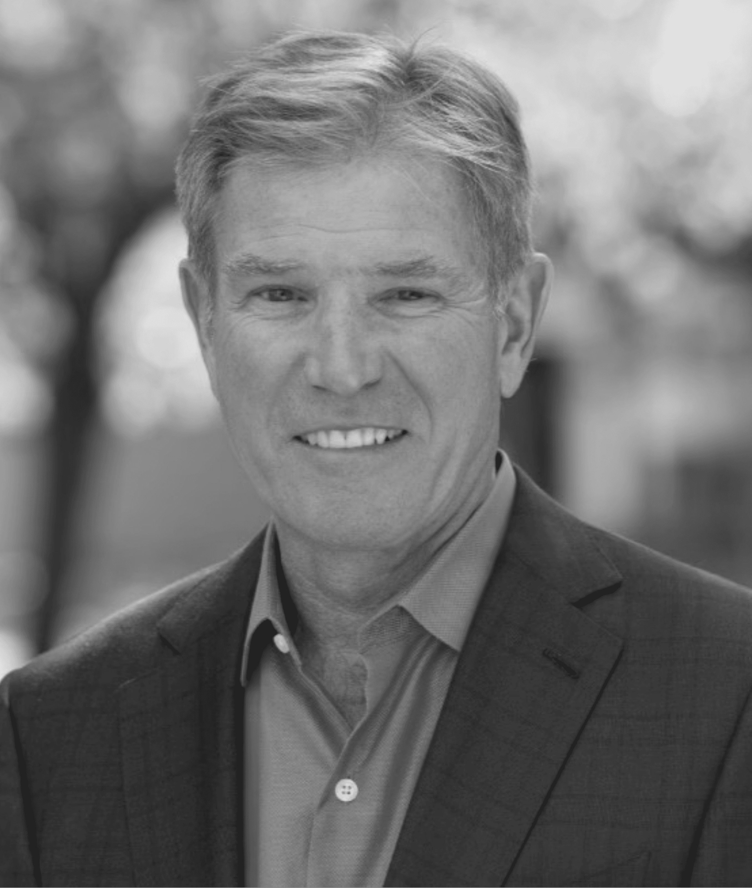
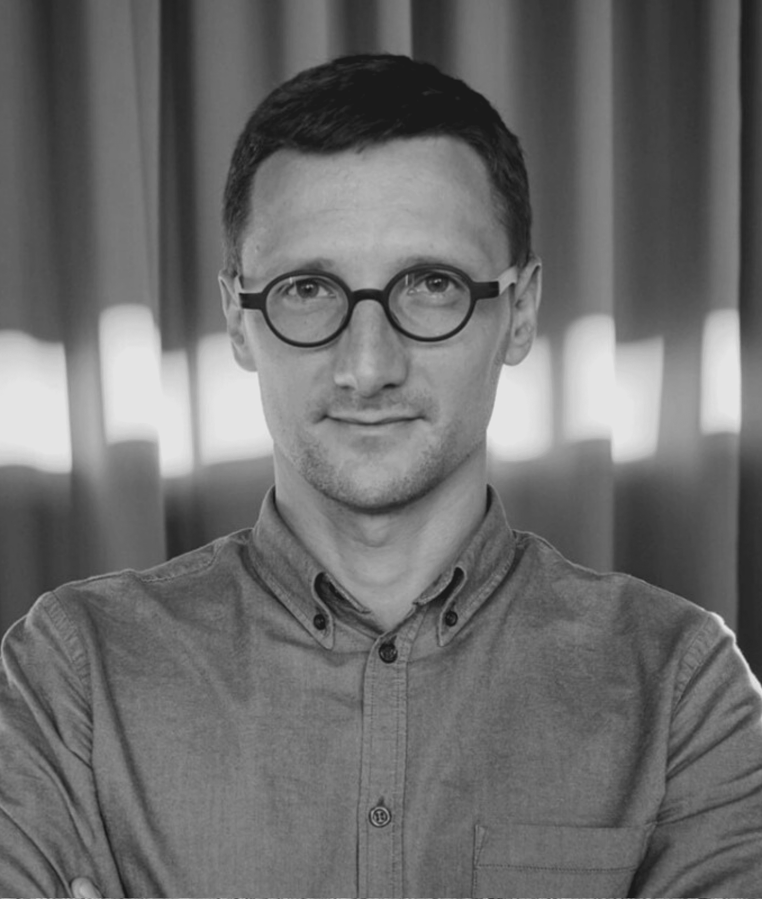
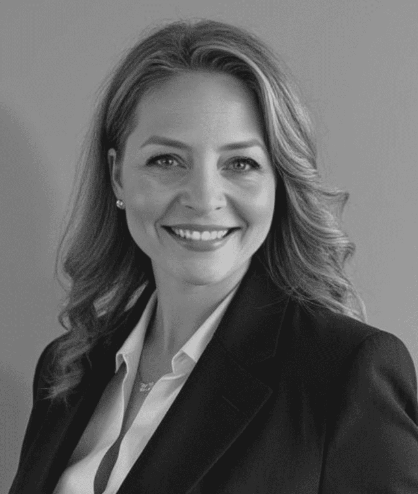
Якщо ваша технологія підтверджена в реальних умовах і ви готові масштабуватися на ринки союзників, DTSA BEAST Mode — ваш шлях до виконання.